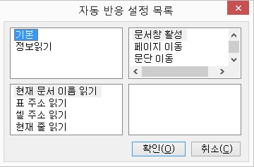

자동 반응 설정에서 지원하는 워드 이벤트는 다음과 같습니다.

워드 문서창으로 활성이 변경된 경우 발생합니다.
<Ctrl-Pgup>, <Ctrl-Pgdn> 키를 사용해 페이지 간 이동한 경우 발생합니다.
<Ctrl-위 화살표>, <Ctrl-아래 화살표> 키를 사용해 문단 이동한 경우 발생합니다.
<위 화살표>, <아래 화살표>, <Pgup>, <Pgdn>, <Ctrl-Home>, <Ctrl-End> 등의 키를 사용해 줄 단위의 이동이 있는 경우 발생합니다.
<Ctrl-왼쪽 화살표>, <Ctrl-오른쪽 화살표> 키를 사용해 단어 이동한 경우 발생합니다.
<왼쪽 화살표>, <오른쪽 화살표>, <Home>, <End> 등의 키를 사용해 글자 이동한 경우 발생합니다.
<Shift-화살표> 키를 사용해 선택영역을 변경한 경우 발생합니다.
표 내에서 <Tab>, <Shift-Tab> 키를 사용해 셀 이동한 경우 발생합니다.
센스리더는 워드에 대해 다음의 기능들을 지원합니다. 여기에 나열된 기능들은 자동 반응 설정이나 키 반응 설정에서 연결
기능으로 지정되어야 실제 동작을 하게 됩니다. 세부 동작과 추가 기능을 실행하기 위해 옵션과 팝업 메뉴를 가진 기능들이 정의되어 있음으로 주의하도록 합니다.
[] 현재 문서 이름 읽기
활성된 문서의 이름(파일이름)을 읽어줍니다.
[] 이전 글자 읽기
현재 캐럿 위치의 이전 글자를 읽어줍니다.
[] 현재 글자 읽기
현재 캐럿 위치의 글자를 읽어줍니다.
[] 다음 글자 읽기
현재 캐럿 위치의 다음 글자를 읽어줍니다.
[] 이전 단어 읽기
현재 캐럿 위치의 이전 단어를 읽어줍니다.
[] 현재 단어 읽기
현재 캐럿 위치의 단어를 읽어줍니다.
[] 다음 단어 읽기
현재 캐럿 위치의 다음 단어를 읽어줍니다.
[] 이전 줄 읽기
현재 캐럿 위치의 줄에서 이전 줄을 읽어줍니다.
단 표와 같은 곳에서는 다르게 동작 할 수 있습니다.
-- 세부 옵션 --
1) 빈줄 메세지 알림: 이옵션이 선택되었을경우 내용이 없으면 "빈줄" 이라고 알려줍니다.
[] 현재 줄 읽기
현재 캐럿 위치의 줄을 읽어 줍니다.
-- 세부 옵션 --
1) 빈줄 메세지 알림: 이옵션이 선택되었을경우 내용이 없으면 "빈줄" 이라고 알려줍니다.
2) 읽기방법: 캐럿을 중심으로 전체, 오른쪽, 왼쪽,단어를 선택할 수 있습니다.
[] 다음 줄 읽기
현재 캐럿 위치의 줄에서 다음 줄을 읽어줍니다.
단 표와 같은 곳에서는 다르게 동작 할 수 있습니다.
-- 세부 옵션 --
1) 빈줄 메세지 알림: 이옵션이 선택되었을경우 내용이 없으면 "빈줄" 이라고 알려줍니다.
[] 이전 문단 읽기
현재 캐럿 위치의 이전 문단을 읽어줍니다.
[] 현재 문단 읽기
현재 캐럿 위치의 문단을 읽어줍니다.
[] 다음 문단 읽기
현재 캐럿 위치의 다음 문단을 읽어줍니다.
[] 메모 읽기
현재 캐럿 위치에 메모 내용이 등록되어 있으면 메모 내용을 알려줍니다.
[] 메모 개수 읽기
현재 캐럿이 있는 줄을 중심으로 메모의 총 개수와 현재 메모의 위치를 읽어 줍니다.
-- 세부 옵션 --
1) 현재 위치 알림: 현재 줄에 메모가 있고 캐럿이 메모가 있는글자에 있을경우 현재 메모가 있는 글자가 줄에서 몇번째인지를 알려줍니다.
[] 메모 상태 읽기
캐럿 이동시에 현재줄의 메모 내용을 읽어줄지 선택합니다.
-- 세부 옵션 --
1) 진입알림: 이 옵션이 선택되어 있는 경우 새로운 메모가 있을때 메모 내용을 읽어 줍니다.
2) 종료 알림: 이 옵션이 선택 되어 있으면 메모에서 벗어날때 벗어난 메모 내용과 "종료"라는 메세지를 알려 줍니다.
[] 각주 읽기
현재 캐럿 위치에 각주가 있으면 각주번호와함께 내용을 읽어줍니다.
[] 각주 개수 읽기
현재 줄을 중심으로 각주의 총개수와 현재 위치를 알려줍니다.
-- 세부 옵션 --
1) 현재 위치 알림: 캐럿이 각주에 있을경우 현재 줄에서 각주가 몇번째인지 알려줍니다.
[] 각주 상태 읽기
새로운 각주를 만나거나 벗어 날때 각주 번호와 내용을 읽어주는 기능입니다.
-- 세부 옵션 --
1) 진입알림: 새로운 각주를 만났을때 각주 정보를 읽어주는 기능입니다.
2) 종료 알림: 각주에서 벗어날때 벗어난 각주 정보와 "종료"라는 메세지를 알려줍니다.
[] 미주 읽기
현재 캐럿 위치에 미주가 있으면 미주번호와함께 내용을 읽어줍니다.
[] 미주 개수 읽기
현재 줄을 중심으로 미주의 총개수와 현재 위치를 알려줍니다.
-- 세부 옵션 --
1) 현재 위치 알림: 캐럿이 미주에 있을경우 현재 줄에서 미주가 몇번째인지 알려줍니다.
[] 미주 상태 읽기
새로운 미주를 만나거나 벗어 날때 미주 번호와 내용을 읽어줍니다.
-- 세부 옵션 --
1) 진입알림: 새로운 미주를 만났을때 미주 정보를 읽어줍니다.
2) 종료 알림: 미주에서 벗어날때 벗어난 미주 정보와 "종료"라는 메세지를 알려줍니다.
[] 필드 읽기
워드에는 날짜, 시간, 하이퍼링크 등과 같은 여러가지 필드가 있습니다. 이 필드에 캐럿이 있을경우 이 필드에 대한 종류를 알려줍니다.
[] 필드 개수 읽기
현재줄을 중심으로 필드가 총 몇개 있고 캐럿이 필드에 있을경우 그 필드가 몇번째인지를 알려줍니다.
-- 세부 옵션 --
1) 현재 위치 알림: 현재 필드가 현재줄에서 몇번째인지 알려줍니다.
[] 필드 상태 읽기
새로운 필드를만나거나 벗어날때 새로운 필드 정보를 읽어줍니다.
-- 세부 옵션 --
1) 진입 알림: 새로운 필드를 만났을때 필드 정보를 읽어주는 기능입니다.
2) 종료 알림: 현재 필드에서 벗어날때 벗어난 필드 정보와 "종료"라는 메세지를 알려주는 기능입니다.
[] 문법 오류 읽기
현재 캐럿 위치에 문법 오류가 있으면 "문법 오류"라고 읽어줍니다.
[] 문법 오류 개수 읽기
현재 줄을 중심으로 문법 오류 총개수와 현재 위치를 알려줍니다.
-- 세부 옵션 --
1) 현재 위치 알림: 현재 글자에 문법 오류가 있을경우 줄에서 몇번째인지 알려줍니다.
[] 문법 오류 상태 읽기
새로운 문법 오류를 만나거나 벗어 날때 알려주는 기능입니다.
-- 세부 옵션 --
1) 진입알림: 새로운 문법 오류를 만났을때 "문법오류"라고 알려주는 기능입니다.
2) 종료 알림: 문법 오류에서 벗어날때 "문법오류"와 "종료"라는 메세지를 알려주는 기능입니다.
[] 맞춤법 오류 읽기
현재 캐럿 위치에 맞춤법 오류가 있으면 "맞춤법 오류"라고 읽어줍니다.
[] 맞춤법 오류 개수 읽기
현재 줄을 중심으로 맞춤법 오류 총개수와 현재 위치를 알려줍니다.
-- 세부 옵션 --
1) 현재 위치 알림: 현재 글자에 맞춤법 오류가 있을경우 줄에서 몇번째인지 알려줍니다.
[] 맞춤법 오류 상태 읽기
새로운 맞춤법 오류를 만나거나 벗어 날때 알려주는 기능입니다.
-- 세부 옵션 --
1) 진입알림: 새로운 맞춤법 오류를 만났을때 "맞춤법오류"라고 알려줍니다.
2) 종료 알림: 맞춤법 오류에서 벗어날때 "맞춤법오류"와 "종료"라는 메세지를 알려줍니다.
[] 인라인 객체 읽기
현재 캐럿 위치에 객체가 있으면 객체의 종류를 읽어줍니다.
[] 인라인 객체 개수 읽기
현재 줄을 중심으로 객체의 총개수와 현재 위치를 알려줍니다.
-- 세부 옵션 --
1) 현재 위치 알림: 캐럿이 객체에 있을경우 현재 줄에서 몇번째인지 알려줍니다.
[] 인라인 객체 상태 읽기
새로운 객체를 만나거나 벗어 날때 객체 종류를 읽어주는 기능입니다.
-- 세부 옵션 --
1) 진입알림: 새로운 객체를 만났을때 객체 종류를 읽어주는 기능입니다.
2) 종료 알림: 객체에서 벗어날때 벗어난 객체 종류와 "종료"라는 메세지를 알려주는 기능입니다.
[] 객체 읽기
인라인 객체 읽기와 동일함.
[] 객체 개수 읽기
인라인 객체 개수 읽기와 동일함.
[] 객체 상태 읽기
인라인 객체 상태 읽기와 동일함.
[] 변경 내용 추적 읽기
변경 내용 추적 기능은 현재 문서에 변경 내용 추적 기능이 활성화 되어 있을 때 동작되는 기능으로 삭제, 삽입 등과 같은 수정 종류를 읽어 줍니다.
[] 변경 내용 추적 개수 읽기
현재 줄에서 변경된 정보가 총 몇개인지 알려줍니다.
-- 세부 옵션 --
1) 현재 위치 알림: 이 옵션이 선택되면 현재 수정정보가 현재줄에서 몇번째인지를 알려줍니다.
[] 변경 내용 추적 상태 읽기
새로운 수정정보를 만나거나 벗어날때 읽어줍니다.
-- 세부 옵션 --
1) 진입 알림: 새로운 수정정보를 만났을때 삭제, 삽입 등과같은 종류를 알려줍니다.
2) 종료 알림:수정된 위치에서 벗어날때 종류와 함께 "종료"라는 메세지로 알려줍니다.
[] 페이지 읽기
현재 페이지의 머리글, 바닥글, 페이지번호를 읽어줍니다.
-- 세부 옵션 --
1) 머리글 읽기: 이 옵션이 선택되어 있고 머리글이 있을 경우 머리글을 읽어줍니다.
2) 바닥글: 이 옵션이 선택되어 있고 바닥글이 있을 경우 바닥글을 읽어줍니다.
3) 개수 읽기: 이 옵션이 선택되어 있으면 현재 문서의 총 페이지수를 읽어 줍니다.
[] 페이지 테두리 읽기
현재 페이지의 테두리 스타일과 색깔등을 읽어줍니다.
[] 페이지 상태 읽기
새로운 페이지를 만나거나 벗어 날때 페이지 정보를 읽어줍니다.
-- 세부 옵션 --
1) 머리글 읽기: 이 옵션이 선택되어 있고 머리글이 있을 경우 머리글을 읽어줍니다.
2) 바닥글: 이 옵션이 선택되어 있고 바닥글이 있을 경우 바닥글을 읽어줍니다.
3) 개수 읽기: 이 옵션이 선택되어 있으면 현재 문서의 총 페이지수를 읽어 줍니다.
4. 진입 알림: 새로운 페이지를 만났을때 위의 1, 2, 3의 설정대로 페이지 정보를 읽어줍니다.
5. 종료 알림: 현재 페이지에서 벗어 날때 벗어난 페이지 정보를 읽어줍니다.
[] 구역 읽기
현재 구역의 번호를 알려줍니다.
-- 세부 옵션 --
1) 개수 읽기: 이 옵션이 선택되면 현재 문서의 총 구역 개수를 알려줍니다.
[] 구역 상태 읽기
새로운 구역을 만나거나 벗어날때 구역 번호를 읽어줍니다.
-- 세부 옵션 --
1) 개수 읽기: 이 옵션이 선택되면 현재 문서의 총 구역 개수를 알려줍니다.
2) 진입알림: 새로운 구역을 만났을때 번호를 알려줍니다.
3) 종료 알림: 구역에서 벗어날때 벗어난 구역 번호와 "종료"라는 메세지를 읽어줍니다.
[] 스타일 읽기
현재 위치의 스타일을 알려줍니다.
[] 스타일 상태 읽기
새로운 스타일을 만나거나 벗어날때 스타일 정보를 읽어줍니다.
-- 세부 옵션 --
1) 진입 알림: 새로운 스타일을 만났을때 읽어줍니다.
2) 종료 알림: 현재 스타일에서 벗어 날때 "종료"메세지와 함께 읽어줍니다.
[] 편집 모드 읽기
현재 상태가 삽입모드인지 수정 모드인지를 알려줍니다.
[] 글꼴 읽기
현재 캐럿 위치의 글자 글꼴 이름이나 크기, 색깔등을 읽어줍니다.
[] 문단 정보 읽기
현재 문단의 맞춤이나 줄 간격의 상태를 읽어 줍니다.
[] 테두리 읽기
현재 텍스트에 테두리가 있을경우 테두리의 스타일과 색깔등을 읽어주고 만약 테두리가 없으면 문단의 테두리정보를 알려줍니다.
[] 텍스트 방향 읽기
현재 문서의 텍스트 방양이 가로인지 세로인지를 알려줍니다.
[] 선택영역 읽기
현재 선택된 글자 개수와 내용을 읽어줍니다.
[] 선택영역 상태 읽기
선택 영역이 변했을 때 선택된 내용과 개수를 읽어줍니다.
[] 셀 주소 읽기
현재 캐럿이 표에 있을 경우 표의 주소를 읽어줍니다.
-- 세부 옵션 --
1) 순서방식: 순서방식은 주소를 엑셀과 같이 a1방식으로 읽을지 아니면 "1행 1열"과 같이 읽을지를 선택할 수 있습니다.
2) 읽기 방법: 행,열 중에 하나만 읽을지 아니면 모두 읽을지를 선택할 수있습니다.
3) 개수 읽기: 표의 총 행과 열을 읽을지를 선택할 수 있습니다.
[] 셀 내용 읽기
현재 셀의 내용 전체를 읽어줍니다.
[] 셀 상태 읽기
표의 셀에 캐럿이 진입하거나 벗어 날때 사용하는 기능으로 옵션 설정에 따라 원하는대로 읽게 할 수 있습니다.
-- 세부 옵션 --
1) 순서방식: 순서방식은 주소를 엑셀과 같이 a1방식으로 읽을지 아니면 "1행 1열"과 같이 읽을지를 선택할 수 있습니다.
2) 읽기 방법: 행,열 중에 하나만 읽을지 아니면 모두 읽을지를 선택할 수있습니다.
3) 개수 읽기: 표의 총 행과 열을 읽을지를 선택할 수 있습니다.
4) 진입알림: 위의 1,2,3 설정에 따라 새로운 셀에 진입할때 읽게 하는옵션입니다.
5. 종료 알림: 셀에서 벗어 날때 벗어난 셀의 정보와 "종료"라는 메세지를 읽게 하는 옵션입니다.
[] 셀 위치 읽기
현재 캐럿이 표에 있을 경우 표의 셀이 표의 좌상단에서 거리를 포인트로 알려줍니다.
[] 셀 크기 읽기
현재 셀의 크기를 포인트 단위로 알려줍니다.
[] 셀 테두리 읽기
현재 캐럿이 표에 있을 경우 셀의 테두리의 스타일과 색깔등을 읽어 줍니다.
[] 행 제목 읽기
현재 표의 가장 처음 행 내용을 읽어줍니다.
[] 열 제목 읽기
현재 표의 가장 처음 열 내용을 읽어줍니다.
[] 행 읽기
현재 행의 셀들을 차례로 읽어줍니다.
-- 세부 옵션 --
1) 빈셀 알림: 셀에 내용이 없을 경우 "빈셀"이라 알려줄지 여부를 선택합니다.
2) 읽기 범위: 읽기 원하는 셀의 범위를 선택합니다. 전체, 현재 셀까지, 현재 셀부터의 세 가지 옵션이 있습니다.
[] 열 읽기
현재 열의 셀들을 차례로 읽어줍니다.
-- 세부 옵션 --
1) 빈셀 알림: 셀에 내용이 없을 경우 "빈셀"이라 알려줄지 여부를 선택합니다.
2) 읽기 범위: 읽기 원하는 셀의 범위를 선택합니다. 전체, 현재 셀까지, 현재 셀부터의 세 가지 옵션이 있습니다.
[] 표 주소 읽기
현재 위치의 표가 현재 문서에서 몇번째인지 알려줍니다.
만약 표 안에 표가 있는것과 같이 중첩되어 있는경우에는 번호 사이에 "-"를 넣어 구별해줍니다.
-- 세부 옵션 --
1) 개수 읽기: 현재 단계에서 표의 총 개수를 알려줍니다.
[] 표 상태 읽기
새로운 표를 만나거나 벗어 날때 알려줍니다.
-- 세부 옵션 --
1) 개수 읽기: 현재 단계에서 표의 총 개수를 알려줍니다.
2) 진입알림: 새로운 표를 만났을때 표주소를 읽어줍니다.
3) 종료 알림: 표를 벗어 날때 벗어난 표의 주소와 "종료"라는 메세지를 알려줍니다.
[] 표 테두리 읽기
현재 캐럿이 표에 있을 경우 표의 테두리의 스타일과 색깔등을 읽어 줍니다.
[] 가상 셀 주소 읽기
현재 캐럿이 표에 있을 경우 가상 셀의 주소를 읽어줍니다.
-- 세부 옵션 --
1) 순서방식: 순서방식은 주소를 엑셀과 같이 a1방식으로 읽을지 아니면 "1행 1열"과 같이 읽을지를 선택할 수 있습니다.
) 읽기 방법: 행,열 중에 하나만 읽을지 아니면 모두 읽을지를 선택할 수있습니다.
3) 개수 읽기: 표의 총 행과 열을 읽을지를 선택할 수 있습니다.
[] 가상 셀 내용 읽기
가상 셀 내용을 읽어줍니다.
-- 세부 옵션 --
1) 빈 셀 알림: 셀에 내용이 없을 경우 "빈셀"이라 알려줄지 여부를 선택합니다.
[] 가상 셀 왼쪽으로 이동
가상 셀을 왼쪽으로 한 셀 이동합니다.
[] 가상 셀 위로 이동
가상 셀을 위로 한 셀 이동합니다.
[] 가상 셀 오른쪽으로 이동
가상 셀을 오른쪽으로 한 셀 이동합니다.
[] 가상 셀 아래로 이동
가상 셀을 아래로 한 셀 이동합니다.
[] 가상 셀 행 처음으로 이동
가상 셀 포인터를 행의 처음 셀로 이동합니다.
[] 가상 셀 행 끝으로 이동
가상 셀 포인터를 행의 마지막 셀로 이동합니다.
[] 가상 셀 열 처음으로 이동
가상 셀 포인터를 열의 처음 셀로 이동합니다.
[] 가상 셀 열 끝으로 이동
가상 셀 포인터를 열의 마지막 셀로 이동합니다.
[] 현재 셀을 가상 셀로 이동
가상 셀 위치로 캐럿을 이동합니다.
[] 가상 셀을 현재 셀로 이동
캐럿이 위치한 셀로 가상 셀을 이동합니다.
[] 책갈피 목록
문서 내의 모든 책갈피를 목록으로 보여줍니다. 원하는 항목을 선택 후 <Enter> 키를 누르면 책갈피 위치로 캐럿을 이동합니다.
[] 메모 목록
문서 내의 모든 메모를 목록으로 보여줍니다.
-- 팝업메뉴 --
편집('Enter'): 메모 텍스트로 캐럿을 이동하여 메모 편집을 할 수 있습니다.
이동('Ctrl Enter'): 문서 내 메모 위치로 캐럿을 이동합니다.
[] 미주 목록
문서 내 모든 미주를 목록으로 보여줍니다.
-- 팝업메뉴 --
편집('Enter'): 미주 텍스트 영역으로 캐럿을 이동하여 미주 내용을 편집할 수 있습니다.
이동('Ctrl Enter'): 문서 내 미주 첨자 위치로 캐럿을 이동합니다.
[] 각주 목록
문서 내 모든 각주를 목록으로 보여줍니다.
-- 팝업메뉴 --
편집('Enter'): 각주 텍스트 영역으로 캐럿을 이동하여 각주 내용을 편집할 수 있습니다.
이동('Ctrl Enter'): 문서 내 각주 첨자 위치로 캐럿을 이동합니다.
[] 링크 목록
문서 내 모든 링크를 목록으로 보여줍니다.
-- 팝업메뉴 --
링크 열기('Enter'): 선택한 링크를 엽니다.
위치로 이동('Ctrl Enter'): 문서 내 링크 위치로 캐럿을 이동합니다.
[] 표 목록
문서 내 모든 최상위 표를 목록으로 보여줍니다. 원하는 항목을 선택 후 <Enter> 키를 누르면 해당 표 위치로 캐럿을 이동합니다.
센스리더는 WORD 활용을 위한 다음의 단축키들을 제공합니다.
여기에 정의된 단축키들은 전체 지원 기능 중에서 필수적인 기능들만을 선별하여 단축키로 정의한 것이며, 사용자들은 필요에 따라 원하는 기능을 단축키로 정의하여 사용할 수 있습니다.
기능 설명 중 | 기호는 해당 단축키를 반복해서 누를 때 실행되는 기능을 의미합니다.
1. Ctrl-Shift-B
선택영역 읽기
2. Ctrl-Shift-F
셀 내용 읽기, 셀 주소 읽기 | 페이지 읽기 | 현재 문서 이름 읽기
3. Ctrl-Alt-리턴
현재 셀을 가상 셀로 이동, 가상 셀 내용 읽기, 가상 셀 주소 읽기
4. Shift-Alt-A
표 목록
5. Shift-Alt-B
책갈피 목록
6. Shift-Alt-C
열 제목 읽기
7. Shift-Alt-E
미주 목록
8. Shift-Alt-F
각주 목록
9. Shift-Alt-L
링크 목록
10. Shift-Alt-M
메모 목록
11. Shift-Alt-R
행 제목 읽기
12. Shift-Alt-슬래쉬
테두리 읽기 | 셀 테두리 읽기 | 표 테두리 읽기 | 페이지 테두리 읽기
13. Ctrl-Shift-Alt-리턴
가상 셀을 현재 셀로 이동, 가상 셀 내용 읽기, 가상 셀 주소 읽기
14. Ctrl-Shift-Alt-C
열 읽기
15. Ctrl-Shift-Alt-R
행 읽기
16. Ctrl-Shift-Alt-X
키 반응 설정 선택
17. Ctrl-Shift-Alt-Z
자동 반응 설정 선택
18. Ctrl-Insert-A
글꼴 읽기
19. 확장Ctrl-Alt-왼쪽 화살표
가상 셀 왼쪽으로 이동, 가상 셀 내용 읽기, 가상 셀 주소 읽기
20. 확장Ctrl-Alt-위쪽 화살표
가상 셀 위쪽으로 이동, 가상 셀 내용 읽기, 가상 셀 주소 읽기
21. 확장Ctrl-Alt-오른쪽 화살표
가상 셀 오른쪽으로 이동, 가상 셀 내용 읽기, 가상 셀 주소 읽기
22. 확장Ctrl-Alt-아래쪽 화살표
가상 셀 아래쪽으로 이동, 가상 셀 내용 읽기, 가상 셀 주소 읽기
23. 확장Ctrl-Alt-Home
가상 셀 행 처음으로 이동, 가상 셀 내용 읽기, 가상 셀 주소 읽기
24. 확장Ctrl-Alt-End
가상 셀 행 끝으로 이동, 가상 셀 내용 읽기, 가상 셀 주소 읽기
25. 확장Ctrl-Alt-PGUP
가상 셀 열 처음으로 이동, 가상 셀 내용 읽기, 가상 셀 주소 읽기
26. 확장Ctrl-Alt-PGDN
가상 셀 열 끝으로 이동, 가상 셀 내용 읽기, 가상 셀 주소 읽기